Discovered by Invictus
Discovered by Invictus
 Art by patrika
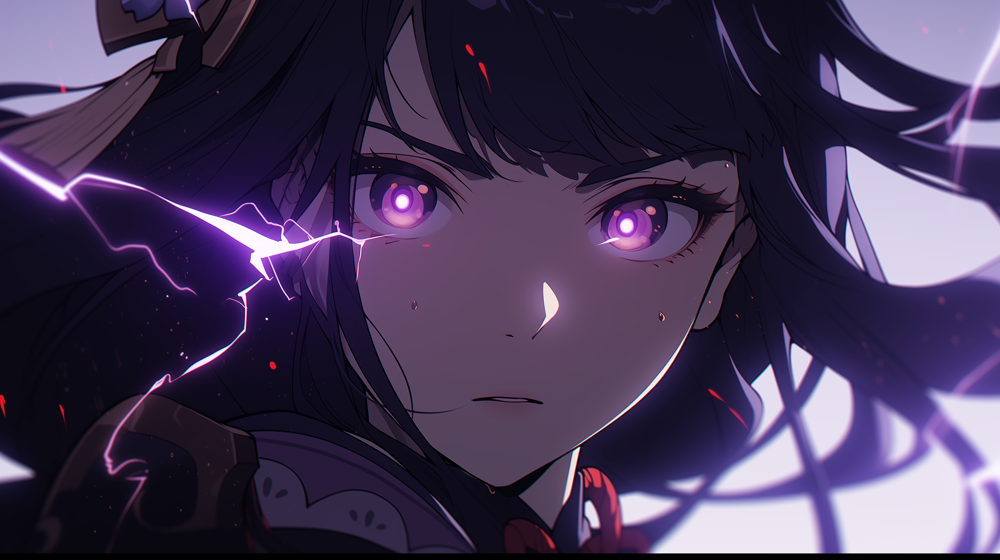
Art by patrika
Discovered by Invictus
Art by patrika
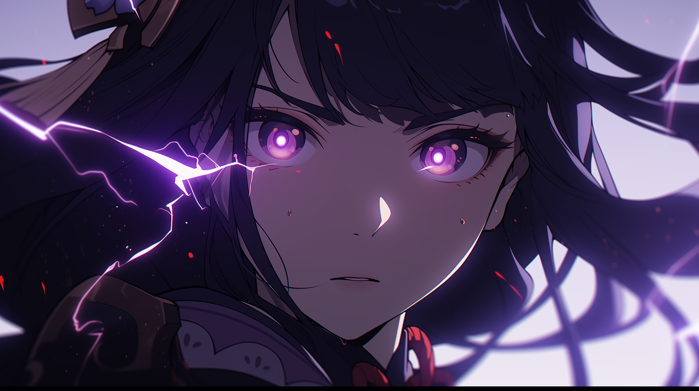
Art by patrika
Art by patrika
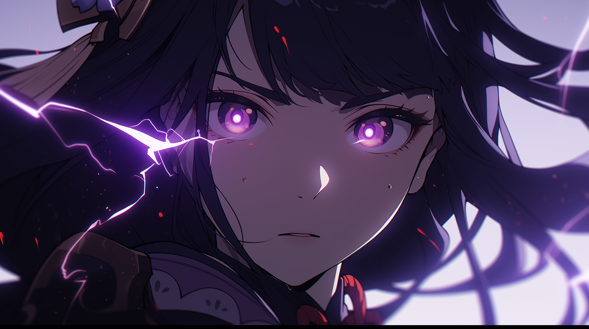
Art by patrika
Discovered by Invictus
Art by patrika
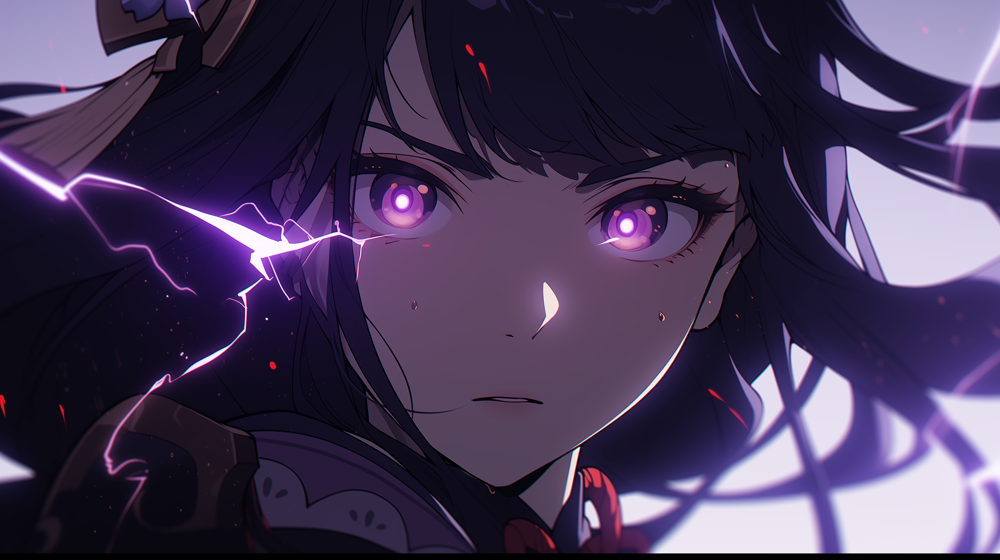
Art by patrika

| Raiden Shogun | |
|---|---|
| Rating | SS |
| Rarity | SSR |
| Element | Electro |
| Weapon | Polearm |
| Voice Actors |
|

| Raiden Shogun | |
|---|---|
| Title | Plane of Euthymia |
| Other name | Raiden Ei |
| Affiliation | Inazuma City |
| Birthday | 6/26 |
| Constellation | Imperatrix Umbrosa |
| Nation | Inazuma |
| Stat | Value |
|---|---|
| HP |
1,004/12,907
|
| ATK |
26/337
|
| DEF |
61/789
|
| Energy Recharge% |
100%/196%
|
| Crit Rate% |
5%/5%
|
| Crit Damage% |
100%/100%
|
| Elemental Mastery |
0/0
|
| Electro Damage Bonus% |
0%/0%
|
| Ascension Phase | Level | Material |
|---|---|---|
| 0* | 1/20 | None |
| 1* | 20/40 |

20,000 1 
3 3 |
| 2* | 40/50 |
40,000 2 
3
10 15 |
| 3* | 50/60 |
60,000 4
6
20 12 |
| 4* | 60/70 |
80,000 8 
3
30 18 |
| 5* | 70/80 |
100,000 12
6
45 
12 |
| 6* | 80/90 |
120,000 20 
6
60
24 |
| Icon | Name | Type |
|---|---|---|

|
Origin | Normal Attack |
|
Normal Attack 
Normal Attack

Charge Attack

Plunging Attack
|
||
|
|
Transcendence: Baleful Omen | Elemental Skill |
|
The Raiden Shogun unveils a shard of her Euthymia,
dealing Electro DMG to nearby opponents,
and granting nearby party members the Eye of Stormy Judgment.
Coordinated attacks generated by characters not controlled by you deal 20% of the normal DMG.
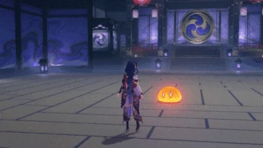
Press
Eye of Stormy Judgment
Eye of Stormy Judgment, coordinated attacks
|
||
| Secret Art: Musou Shinsetsu | Elemental Burst | |
|
Gathering truths unnumbered and wishes uncounted, the Raiden Shogun unleashes the Musou no Hitotachi and deals
AoE Electro DMG,
using Musou Isshin in combat for a certain duration afterward. The DMG dealt by Musou no Hitotachi and Musou Isshin's attacks will
be increased based on the number of Chakra Desiderata's Resolve stacks consumed when this skill is used. 
Elemental Burst
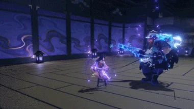
Musou Isshin, Normal Attacks

Musou Isshin, Charged Attacks

Chakra Desiderata

Chakra Desiderata, Resolve stacks from allies
|
||
| Wishes Unnumbered | 1st Ascension Passive | |
|
When nearby party members gain Elemental Orbs or Particles, Chakra Desiderata gains 2 Resolve stacks. This effect can occur once every 3s. 
|
||
| Enlightened One | 4th Ascension Passive | |
Each 1% above 100% Energy Recharge that the Raiden Shogun possesses grants her:
|
||
| All-Preserver | Utility Passive | |
Mora expended when ascending Swords and Polearms is decreased by 50%.

|
||
| Talent Level | Required Ascension | Mora | Enhancement Materials | Character Talent Materials | |
|---|---|---|---|---|---|
| 1 -> 2 | 2* |
12,500 |
6 |
3 |
|
| 2 -> 3 | 3* |
17,500 |
3 |
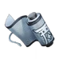
2 |
|
| 3 -> 4 |
25,000 |
4 |
4 |
||
| 4 -> 5 | 4* |
30,000 |
6 |
6 |
|
| 5 -> 6 |
37,500 |
9 |
9 |
||
| 6 -> 7 | 5* |
120,000 |
4 |
4 
1 |
|
| 7 -> 8 |
260,000 |
6 |
12
1 |
||
| 8 -> 9 | 6* |
450,000 |
9 |
12
2 |
|
| 9 -> 10 |
700,000 |
12 |
16
2 
1 |
||
| Icon | Name | Level |

|
Chakra Desiderata will gather Resolve even faster. When Electro characters use their Elemental Bursts, the Resolve gained is increased by 80%. When characters of other Elemental Types use their Elemental Bursts, the Resolve gained is increased by 20%. |
1 |

|
While using Musou no Hitotachi and in the Musou Isshin state applied by Secret Art: Musou Shinsetsu, the Raiden Shogun's attacks ignore 60% of opponents' DEF. |
2 |
|
Increases the Level of Secret Art: Musou Shinsetsu by 3. |
3 | |

|
When the Musou Isshin state applied by Secret Art: Musou Shinsetsu expires, all nearby party members (excluding the Raiden Shogun) gain 30% bonus ATK for 10s. |
4 |
|
Increases the Level of Transcendence: Baleful Omen by 3. |
5 | |
|
While in the Musou Isshin state applied by Secret Art: Musou Shinsetsu,
attacks by the Raiden Shogun that are considered part of her Elemental Burst will decrease all nearby party members'
(but not including the Raiden Shogun herself) Elemental Burst CD by 1s when they hit opponents. |
6 |
Raidens good Constellations are concentrated into C1-3. While it may be tempting to max out your Raiden by going for 2 or 3 more copies of her, consider this:
At the end of the day, its your primos and your money. But know that there is no pressure to pull her Constellations in order to make her a good unit. Raiden is very strong regardless of Constellations and can help your account right out of the box if you put in the effort.
Burst DPS (Hyper/On-field Raiden)
Building a team rotation around Raidens Burst allows her to deal large amounts of damage while batterying her teammates.
Hyperbloom Trigger (EM/Off-field Raiden)
Emphasizes Raidens Skill for its ability to easily trigger Hyperblooms off-field.
Thanks to Raidens A4, Emblem of Severed Fate, a part of ER% is converted into DMG%, as well as helping generate more Flat Energy with her Elemental Burst. That being said, ATK% sands will be the preferred choice for her personal damage in most scenarios, but ER% sands can range from 10% less personal damage to a negligible < 1% difference depending on outside buffs. Engulfing Lightning 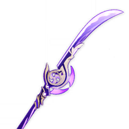 will additionally convert ER to ATK%, which leads ER sands to pull ahead with it.
Goblet: Electro DMG% or ATK%The prevalence of DMG% sources in Raidens kit can allow an ATK Goblet to be a comparable option in some narrow situations, such as without external ATK buffers such as: Yoimiya, Xiangling, Sara, Bennett, Lynette, Aloy, Chevreuse, etc, with significant external DMG% buffers such as: Kazuha, Furina, Mona, Sara, Sucrose, etc, without ATK Sands, and/or with high Base ATK weapons, but in most cases Electro DMG% will be her best choice given equal substats.
Circlet: CRIT Rate or CRIT DMGPick whichever brings you closer to a ½ ratio of CR/CD, taking into account other sources of CR and CD such as The Catch 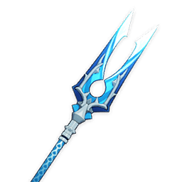 or Saras C6.
Substats: CR = CD > ATK% ≥ ER > Flat ATKThe balance between ER% and ATK% can vary as discussed with her Sands choices, but CRIT will always be more valuable than both.
Elemental Mastery on Raiden?With the advent of Dendro, Elemental Mastery has become a more valuable stat for Raiden due to her ability to trigger Aggravate and Hyperbloom reactions. However, its value varies heavily on how many of these reactions she is able to trigger; generally, sticking to standard builds for Raiden in an on-field role is a safe option. That said, if reactions can be triggered consistently then Elemental Mastery can gain value and the stat should not be considered as wasted if played in such teams. Moreover, Raiden can also more comfortably now assume a mostly off-field role as a Hyperbloom trigger in these styles of teams, it is recommended to build Raiden fully focusing on Elemental Mastery.
ER requirement?
There is no correct answer to this, as it depends on what you wish to accomplish.
Raiden as a unit will value ER beyond just a requirement to cast her Elemental Burst,
as ER% will translate into both DMG% and Flat Energy refund to both herself and her teammates.
As such, her ER can fluctuate a lot depending on the chosen weapon and sands.
Typically, 200%+ ER will be enough for her to battery herself even as solo Electro in most teams that dont
have atrocious Energy generation. This is easy to reach with an ER Sands or weapon, and hits a nice breakpoint
of 20 Energy per Burst at TL10. Due to its ER secondary stat and propensity to value ER sands, Engulfing Lightning
will often reach 250%+ ER before the bonus ER from the passive.
2-Piece: Energy Recharge +20%.
4-Piece: Increases Elemental Burst DMG by 25% of Energy Recharge. A maximum of 75% bonus DMG can be obtained in this way.
Undisputed BiS set for on-field Raiden, giving you everything she wants in one package: ER on 2pc,
as well as ER conversion to Burst DMG% on 4pc. Combined with her A4 passive, it allows Raiden to build ER while strengthening her damage.
Simply equipping ESF onto Raiden will grant 20% ER, 38%+ Burst DMG, 8% Electro DMG and 1.5 extra Energy generation.
All of these stats may seem small at first, but they add up and get better the higher her ER goes.
If you ever find that another set can give you higher damage, either in Genshin Optimizer or in game,
that does not mean it is a good alternative. It means you need to farm ESF more.
As an off-field Hyperbloom trigger, Raiden can potentially make use of different artifact sets.
She can boost her own reaction damage with 4
Gilded Dreams
 , or 2pc combinations of
Gilded Dreams
and
Wanderers Troupe
.
Alternatively, she can also opt to use more supportive artifacts such as 4
Tenacity of the Millelith
, or 2pc combinations of
Gilded Dreams
and
Wanderers Troupe
.
Alternatively, she can also opt to use more supportive artifacts such as 4
Tenacity of the Millelith
 if her team has power
Attack-scaling units. While 4
Deepwood Memories
increases both Hyperbloom damage and her teammates Dendro damage,
there are typically better users for the set however, if there are no other holders, it becomes Raidens best option.
if her team has power
Attack-scaling units. While 4
Deepwood Memories
increases both Hyperbloom damage and her teammates Dendro damage,
there are typically better users for the set however, if there are no other holders, it becomes Raidens best option.
Averaged across a variety of buff options: unbuffed, TTDS, Kazuha, Kazuha + TTDS,
C6 Sara + 4NO, Bennett + C6 Sara + 4NO,
Bennett + Kazuha + TTDS + 4NO, Bennett + Kazuha + C6 Sara + 4NO,
Bennett + Pyro resonance + 4NO
4ESF. ER weapons use either ATK or ER Sands depending on which is higher damage,
non ER weapons use ER Sands. It may be possible to run non ER weapons without ER
sands in teams with Electro resonance, particularly with other Electro characters
contributing Particles such as Fischl, Yae, or Sara if she uses her Charged Attack.
Rotation used is 3x N3C + N1C unless otherwise specified. KQMC Standard
| Weapon Image | Weapon | % of The Catch R5 | Notes |
|---|---|---|---|
| Engulfing Lightning R1 | 114.2% |
Raidens BiS and signature weapon. Comes with the added benefit of incentivizing building more ER for damage, removing any need to compromise between damage and comfort and improving her capacity to battery the rest of her team. Matches her outfit. |
|
| 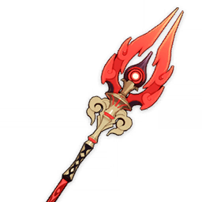 | Staff of Homa R1 | 104.6% |
Calculated above 50% HP. Raiden has no innate HP drain built into her kit, so it is unlikely she will ever benefit from the low HP passive. However, raw stats still make this a great option. |
| 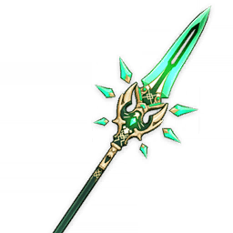 | Primordial Jade Winged-Spear R1 | 103.1% |
Zero stacks on Raidens initial slash hurts this weapon, but she will still be able gain stacks over the duration of her Burst, and the high Base ATK and CR secondary stat are definitely appreciated too. |
| 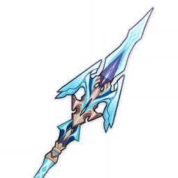 | Calamity Queller R1 | 102.6% |
Raidens rotation patterns (Skill to set up > period off of Raiden > Burst > on-field damage window) actually lend themselves fairly well to this weapon, and while her off-field Skill damage is fairly minimal, she is technically one of the few Polearm users who can benefit from the off-field portion of the passive for at least a little bit of her damage. Other 5* may offer more desirable stats, but a ridiculous mountain of ATK is still nothing to complain about. |
| 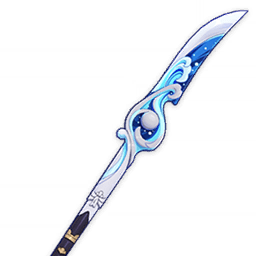 | Wavebreakers Fin R5 | 102.3% |
Calculated with 290 total Burst cost. Wavebreakers value will be highly variable depending on refine, team Energy cost, and buffs, but it can be a competitive 4* option and it can help free up The Catch for another unit if needed. |
| 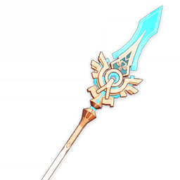 | Skyward Spine R1 | 101.9% |
Calculated with 3x N3C + N2C. Better base stats than The Catch, but a worse passive. Raiden cannot trigger the Phys procs in her Burst, but she can still benefit from the ATK speed. If this allows you to access higher damage combos, Skyward Spine can end up an upgrade for Raiden. |
| 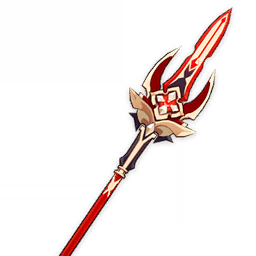 | Deathmatch R5 | 101.2% |
Calculated against 2+ enemies. A very expensive upgrade over a fully F2P option, but worth considering if you already own it or need The Catch for another unit. |

|
Lithic Spear R5 | 100.0% |
Calculated with 2 stacks. Only worth considering at high refine and with multiple Liyue teammates, but it can be a fine option under those circumstances. |
| The Catch R5 | 100% |
Valuable passive well paired to Raidens damage profile. Go fish. |
|
| 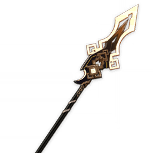 | Vortex Vanquisher R1 | 97.7% |
Calculated unshielded. All the stacking caveats of PJWS, but without any crit or DMG% to sweeten the deal and with a conditional that Raiden teams rarely fulfill. |
| Deathmatch R1 | 96.0% |
Decent alternative option if necessary. |
|
| Wavebreakers Fin R1 | 93.3% |
Not really worth considering without refines. |
|
|
|
Lithic Spear R1 | 92.2% |
Not really worth considering without refines. |
| 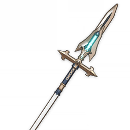 | Favonius Lance R1-5 | 84.8% |
Favonius limits Raidens damage, and even in teams with other Energy hungry units making up a higher portion of team damage than her it will still at best draw even with The Catch and in most cases still be a downgrade. Not recommended. |
| Weapon Image | Weapon | Notes |
|---|---|---|
| 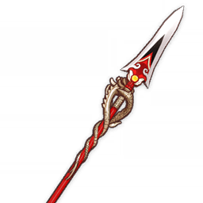 | Dragons Bane |
Dragons Bane on Elemental Mastery builds provides the highest amount of EM of any polearm as Raiden has essentially no other stat requirements on such a build, Dragons Bane will generally serve as the best option for her personal damage, despite the essentially wasted passive. |

|
Moonpiercer |
Moonpiercer serves as EM Raidens strongest F2P option it can also be situationally better for team damage than Dragons Bane when Raiden is paired with strong Attack-scaling teammates who can make use of its passive. |
| Favonius Lance |
While Raiden does not need the Energy Recharge on an EM build, Favonius Lance can be considered if paired with exceptionally energy-hungry teammates in order to battery them. |
Consider the units you have, and what your other team might need. Given Raidens flexibility,
you should be able to build a team for her that ensures both your teams will be able to reach their potential with minimal compromises.
Your goal is to create a team that can meet any DPS checks thrown its way through some combination of buffing Raidens damage,
bringing in additional damage from off-field DPS units and/or buffing those units as well, while still being able to survive any content
it comes across through some combination of healing, shielding and/or damage reduction.
Buffers should be chosen so as to offer as much benefit to Raidens entire team as possible without contesting roles or complicating rotations.
| Viridescent Venerer |
4pc Viridescent Venerer, held by an Anemo unit who will Swirl Electro and potentially other Elements as well in order to shred enemy resistances,
is a very powerful buff to Raiden and her teammates. Most teams should look to slot a 4VV user. The only exception to this rule would be teams where Raiden is paired with Xiangling, as her high rate of Pyro application and the inability of Pyro and Electro to coexist as auras like Hydro and Electro means consistently Swirling both Elements for 4VV, while technically possible, is difficult. |
|---|
| Sara/Mona/TTDS |
Some buffs require directly swapping to Raiden from the buffer either as a condition of the buff,
such as Thrilling Tales of Dragon Slayers or (excepting some impractical setups with tight swaps) Saras Tengu Juurai buff,
or in order to take maximum advantage of very limited uptime, such as Monas Omen buff. Most teams will take at most one of these buffers if they choose to use one, as bringing multiple would introduce unnecessary swaps and limit uptime on buffs. Sara can be used to buff units other than Raiden in some teams, such as Yae or Fischl in pure Electro setups or Xiangling with Bennett, but even in these cases she should not be paired with a TTDS holder. |
|---|
| Bennett |
Bennetts Burst allows him to buff on-field units through any number of swaps for a limited uptime.
The field will last for 12s, with a tick applying all buffs (and Pyro) to whoever is on-field once a second,
and the buff will linger for a couple seconds after the final tick applying it. As such, you can expect 13-14s effective Bennett Burst uptime. However, Raiden is required to stay in Bennetts field to receive his buff; this can be challenging with enemies that move a lot or enemies that can be knocked back by Raidens attacks or Overloaded, particularly without off-field grouping. |
|---|
| Resolve | Resolve stacks are a mechanic built into Raidens kit, not a buff given to her by other units, but they are an increase in Raidens damage that is dependent on the composition of the rest of her team. This gives her additional synergy with high Burst Cost units, beyond the Energy she can provide them. |
|---|
Raidens Burst DMG% buff from her Skill, Energy refund from her Burst, and relatively short field time requirements as compared to many other on-field DPS units allow her to pair well with characters that can deal significant damage in short windows or from off-field, particularly those who deal talent damage through their Burst, have higher ER requirements, and/or have higher Burst Costs.
| Reactions |
Reactions such as Electro-Charged and Overloaded can add some damage to Raidens teams, but they will be relatively unimportant for most units who would not otherwise
seek to build EM. As such, Raiden will not build around them, but her team can. However, Aggravate and Hyperbloom serve as reactions Raiden can directly take advantage
of the ways this affects her build is discussed in Artifacts. Xiangling has innate EM from ascension, and thus serves as a better Overloaded trigger than most other units who would seek to build for talent damage rather than Transformative Reaction damage. Raiden alone can struggle to keep up Electro against Xianglings Pyro application, so additional application from Yae or Fischl can help maintain Electro as aura and Pyro as trigger. Electro-Charged allows both Hydro and Electro to persist as auras, which can allow Xiangling to Vaporize her Burst and Skill damage and gain further value from EM to the point where she can consider looking for it on her Sands or weapon and in substats. Electro-Charged does consume some Electro gauge, but it will not typically do so fast enough to reduce Overloaded procs, and Hydro can serve as a means to wipe Pyro if Xiangling does happen to overtake and become aura. Most Anemo supports with the exception of Jean outside of Sunfire setups will trigger enough Swirls to make building EM ideal for their personal damage, even without any other Reactions. However, because Swirl applies Elemental Gauge in AoE and because many Anemo units are able to absorb Elements into their Skills and/or Bursts, Anemo units are additionally capable of serving as triggers for Electro-Charged and Overloaded. Because they would have high EM built already, these Reactions can be significant gains for their personal and team damage. While Overloaded has a higher base multiplier, Electro-Charged can allow Anemo units to additionally increase their damage by offering two auras they can potentially Swirl. In single-target, Swirl will consume Gauge without reapplying it, which can complicate questions of reaction ownership and reduce Anemo units contributions even beyond halving their Swirl damage. Jean does not have any abilities that can absorb an Element, and she triggers relatively few Swirls per rotation. However, her Burst field will apply Anemo to the on-field character, allowing her to take advantage of a unique synergy with Bennetts Pyro self-application to trigger up to 10 additional Pyro Swirls every rotation provided units stay within her and Bennetts Burststhis interaction is often called Sunfire after a League of Legends item with a design reminiscent of a Pyro Swirl animation. These Pyro Swirls can also be Vaporized when paired with a Hydro enabler and can trigger Overloaded to further leverage whatever EM she builds. Similarly to Xiangling, Raiden alone can struggle to maintain Electro aura against Sunfire, but Yae, Fischl, or a Hydro enabler can help keep Jean as Overloaded trigger. |
|---|
Extra damage will always be nice for faster and more consistent clears, while extra survivability can provide comfort to a point but is typically unnecessary.
Thus, most teams will limit themselves to one healer or strong shielder as a support, and will ideally look for units for this slot that can bring any additional utility.
Often, strong shielding can be favored outside of corrosion matchups as a source of survivability, as it provides interrupt resistance that can enable smoother rotations
and prevent DPS loss from being staggered by enemies or needing to dodge. However, as Raidens Burst already grants her infinite interrupt resistance, this benefit does not
apply to her, so healing and shielding just end up as alternative means of not dying, with shielding being limited against enemies that can apply corrosion.
This is not a comprehensive list of all characters; characters listed have some potential value with Raiden in teams built around her.
Some units can be played with Raiden, but their teams will function differently, so they will be addressed separately after this section.
Builds are detailed only when they have relevant support value.
| Unit | Build | Notes |
|---|---|---|
|
Bennett
Grade: S
|
Weapons:
Sword with the highest Base Attack, e.g.: Aquila Favonia, Skyward Blade, Prototype Rancour. Artifacts:
4 Noblesse Oblige. |
Role(s): Healer/Buffer
Bennett is one of Raidens most valuable teammates. Being able to condense healing and a huge Attack buff in one slot is already phenomenal, however he is also capable of bolstering other teammates damage by enabling some Anemo units to trigger Overloads, as well as benefiting other units who can snapshot or front load their damage during their limited field time. If Bennett is available, he should always be your first choice for Raidens team. |
|
Xiangling
Grade: A
|
The Catch is a strong option for both Raiden and Xiangling, but only one can run it. |
Role(s): Damage
Xiangling is recommended to be run alongside Bennett, since she can snapshot to fully benefit from his ATK buff and because even with Raiden she will face Energy issues as solo Pyro. Her Pyro application can make consistent Electro VV challenging in most teams, as Raiden will struggle to keep up Electro aura without additional off-field application. Intentionally absorbing Kazuhas Burst with Electro can avoid this issue, or Xiangling can be used in place of a VV unit. Despite these limitations, Xianglings personal damage is significant enough to justify her placement with Raiden in many teams. |
|
Yanfei (C4)
Grade: C
|
Weapons:
Thrilling Tales of Dragon Slayers Favonius Codex Prototype Amber Artifacts:
4 Noblesse Oblige. |
Role(s): Shielder/Healer/Buffer
Yanfei gains a relatively powerful shield at C4, but her ER requirements are stiff and she lacks the Pyro self-application that Thoma and Bennett have. She is capable of running TTDS, but will likely struggle to find enough ER to do so as solo Pyro even paired with Raiden. Her synergy is limited to being one more of many mediocre options for providing survivability. |
 Thoma
Grade: C
Thoma
Grade: C
|
Weapons:
Favonius Lance Kitain Cross Spear Black Tassel Artifacts:
4 Noblesse Oblige. |
Role(s): Shielder
Thomas shield has the potential to be the second strongest shield in the game, beaten only by Zhongli. Furthermore, with proper setup, he can apply Pyro for certain Anemo units to absorb to trigger Overloads with. However, his synergy is extremely limited otherwiseRaiden cannot benefit from his C6 buff, and he thus lacks the buffing capability of many competitors. Moreover, his shields unique method of stacking providing unparalleled stagger resistance is undermined by Raidens infinite poise. Thus, while he is an option, he faces stiff competition for his slot. |
| Unit | Build | Notes |
|---|---|---|
|
Xingqiu
Grade: A
|
Weapons:
Primordial Jade Cutter
4 Emblem of Severed Fate Raiden will lower Xingqius ER requirements, reducing the value of Sacrificial Sword and Favonius Sword as compared to his typical teams. Favonius Sword still matches his ER requirements before C6 nicely and may still provide some utility to the rest of the team, but Sacrificial Sword will only serve to increase rotation length and is recommended against at any con. |
Role(s): Damage/Enabler
Xingqiu stands to provide a significant amount of value for Raiden teams. Firstly, his personal damage is very significant, further bolstered by Raidens Burst Damage Bonus and teamwide batterying as well as potential VV. Furthermore, due to his significant off-field Hydro application, he can consistently enable Electro-Charged even with other elements being applied, thus allowing for Hydro and Electro auras to persist simultaneously. Thus, he can allow Pyro units like Xiangling or Anemo units like Kazuha or Sunfire Jean to Vaporize and Overload against enemies consistently, bolstering team damage. While his contribution is significant, his Hydro application being single-target lowers his value in AoE, and he is a highly contested unit which Raiden does not require in order to function. Additionally, his 21s Skill cooldown can slightly increase rotation lengths. However, when available, he is undoubtedly worth considering. |
|
Yelan
Grade: A
|
Weapons:
Aqua Simulacra
4 Emblem of Severed Fate |
Role(s): Damage/Enabler
While Xingqiu and Yelan tend to perform similar roles in Raiden teams, there are a few nuances to note between using them. Yelan can provide more personal damage while contributing her ramping A4 buff, as well as possessing shorter cooldowns which can allow for tighter rotations in some teams.. That said, Xingqius extra 3 seconds of Burst duration, higher Hydro application and added defensive utility are all important and situationally crucial particularly in the case of when used alongside Xiangling. However, both units will tend to perform similarly and can be especially potent when used together, albeit highly limited to single target damage. |
|
Mona
Grade: B
|
Weapons:
Thrilling Tales of Dragon Slayers Artifacts:
4 Noblesse Oblige (if no other holder) |
Role(s): Buffer
Mona is a potent buffer for Raiden, bolstering her damage significantly. While her Omen duration is short, this is alleviated to some degree by Raiden frontloading significant damage in her initial slash. As a TTDS holder, she faces strong competition for her slot. Both C6 Sara and Lisa will be an improvement over her once buff uptimes are taken into account, but Mona can be better than Lisa for initial slash screenshots. Her Hydro application is relatively limited, but it can allow for some Electro-Charged procs from Anemo teammates, though not nearly to the degree of Xingqiu or Kokomi. |
|
Kokomi
Grade: A
|
Weapons:
Thrilling Tales of Dragon Slayers
4 Tenacity of the Millelith |
Role(s): Healer/Buffer/Enabler
While outclassed in any individual role, Kokomi provides nearly unrivaled role compression in Raiden teams. She is able to hold TTDS in order to buff Raiden, and either provide further buffs through ToM or some off-field damage via OHC. Her healing is significant, and she can maintain full uptime on her jellyfish, which also allows for off-field Hydro application, potentially enough to sustain some Anemo units to consistently Vaporize or Overload. As such, she is a valuable member for Raiden teams. |
|
Barbara
Grade: C
|
Weapons:
Thrilling Tales of Dragon Slayers
4 Ocean-Hued Clam |
Role(s): Healer/Buffer
A downgrade from Kokomi in healing, Particle generation, and Hydro application, though still a functional sustain support. She may struggle to Burst every rotation with TTDS, forcing you to choose between depriving Raiden of Resolve stacks or depriving the team of the little utility she can bring. |
| Unit | Build | Notes |
|---|---|---|
 Yae
Grade: A
Yae
Grade: A
|
Weapons:
Kaguras Verity
4 Thundersoother |
Role(s): Damage
Yae possesses high off-field damage and a powerful Elemental Burst, whose ER needs are made manageable by pairing her with Raiden. Thus, she can achieve a high damage profile, with Raiden/Yae teams being able to compete with other maximum potential Raiden teams. Due to providing a source of consistent damage, Yae allows Raiden teams to deal significantly better with multi-wave content, while their combined Burst damage allows them to still deal well with limited DPS windows. |
|
Fischl
Grade: A
|
Weapons:
Polar Star
4 Golden Troupe |
Role(s): Damage
While she lacks Yaes immense Burst damage, Fischl also provides significant off-field damage through Oz. Her role is simple, but nonetheless quite effectivethough it is worth noting that her damage is constrained significantly to Single Target. |
|
Sara
Grade: A (pre-C6)
/
S(C6)
|
Weapons:
Elegy of the End (easier to proc with C2, C4)
4 Emblem of Severed Fate |
Role(s): Buffer
The Shoguns right-hand woman, and her premiere buffing option. Pre C6, in terms of raw buffing potential, she faces stiff competition from TTDS Lisa and Mona, who are cheaper to build and typically better single unit buffers. Sara can pull ahead of her competitors if using Elegy, and at C6, Saras buffing power is entirely unmatched and she becomes a prime pick for Raiden. Sara is also able to buff multiple units using her Skill, C2, and Burst, which can be an added advantage when paired with secondary damage dealers such as Yae, Fischl, or Xiangling. Further, Saras Burst damage can be relevant on Raiden teams due to being able to benefit from many of the buffs being directed to Raiden. As such, while Raiden can work without her, they have excellent synergy together that is always worth consideration. |
|
Lisa
Grade: A
|
Weapons:
Thrilling Tales of Dragon Slayers
4 Noblesse Oblige |
Role(s): Buffer
Despite being perhaps unfairly frowned upon as a unit, Lisa can offer a lot to Raiden teams. With her ER issues solved by Raidens Energy restoration, Lisa can use her Burst to provide a full uptime 15% Defense shred and can hold TTDS to further buff Raiden. Her buff is competitive with Mona and pre-C6 Sara, while possessing the benefits of being completely F2P, extremely cheap to build and gear, and being relatively uncontested. Even with TTDS, her personal damage is not negligible, particularly when she is able to benefit from many of the buffs being directed to Raiden. |
|
Kuki Shinobu
Grade: B
|
Weapons:
Freedom Sworn
4 Tenacity of the Millelith |
Role(s): Healer
Kuki serves as an excellent healer option on Aggravate and/or Hyperbloom teams, as she can contribute reasonable personal damage through these reactions while also providing healing and buffs through 4TotM. Outside of these teams, however, she is rarely ever the best option even then, the teambuilding flexibility she provides is helpful. |
| Unit | Build | Notes |
|---|---|---|
|
Qiqi
Grade: B
|
Weapons:
Favonius Sword Artifacts:
4 Ocean-Hued Clam |
Role(s): Healer
Qiqis healing is nothing short of incredible, and able to provide copious amounts of survivability to the team. With 4 Ocean-Hued Clam, she also has the capacity to convert this healing into off-field damage, bolstered further by Superconduct. That said, her lack of Particle generation is a hole the rest of the team will have to work around, and even with Raiden Qiqi requires an extremely significant amount of ER in order to Burst every rotation. |
|
Diona
Grade: C
|
Weapons:
Elegy for the End
4 Noblesse Oblige |
Role(s): Shielder/Healer
Diona provides a great amount of survivability to Raiden through her shielding and healing, and combined with her stamina reduction, she can make Raiden very comfortable to play. That said, she lacks any sort of synergy with Raiden, her healing ticks are slow, and her utility through shielding is greatly diminished by Raidens infinite poise during Burst. As such, other options can often outperform her. |
| Unit | Build | Notes |
|---|---|---|
|
Kazuha
Grade: S
|
Weapons:
Freedom-Sworn
4 Viridescent Venerer |
Role(s): Buffer/Damage
Kazuha is the premier anemo buffer for Raiden teams, and it is easy to see why- his DMG% buff boosts Raiden and other damage dealers, he contributes significant personal damage himself, especially when enabled to trigger Electro-Charges and Overloads, and his grouping is valuable to Raiden in AoE. |
|
|
Weapons:
Elegy for the End
4 Viridescent Venerer |
Role(s): Damage
Ventis unparalleled grouping allows him to consistently trivialize floors where his suction works. Outside of this, he can struggle with his Burst missing, but his personal damage and Energy refund are still valuable enough to be worth consideration. |
|
Heizou
Grade: B
|
Weapons:
Solar Pearl
4 Viridescent Venerer |
Role(s): Damage
Heizou has some versatility aside from his access to VV shred that allow him to function as a decent budget Anemo option on Raiden teams. Where applicable, he can use TTDS, Prototype Amber or Hakushin Ring to provide additional team utility alternatively, with proper investment, his personal damage with his fully stacked Elemental Skill can be significant. Furthermore, he has access to decent grouping at C2. That said, his low Burst cost limits the amount of resolve stacks Raiden can gain, and his utility options and damage are still usually worse than what Kazuha or Jean can provide in his place. |
|
Sucrose
Grade: B
|
Weapons:
Thrilling Tales of Dragon Slayers
4 Viridescent Venerer |
Role(s): Buffer
While often considered a budget option on Raiden teams, Sucrose can apply VV, provide buffs via TTDS or Hakushin Ring, and offer good grouping as Raiden enables her to be able to Burst every rotation, albeit needing to build ER. Unfortunately, in most teams she cannot pass TTDS to Raiden without creating rotation conflicts, and her EM buff is of minimal value. Her C6 can be significant for Raiden, but it is difficult to consistently absorb her Burst with the right element. |
|
Jean
Grade: A (pre-C2) /
S (C2+)
|
Weapons:
Primordial Jade Cutter
4 Viridescent Venerer |
Role(s): Healer/Damage
Jean has significant utility for Raiden alone, she has reasonable personal damage, healing, and VV all in one slot, compressing the roles a Raiden team needs. Further, her C2 buff can be valuable to execute better combos on Raiden. Her damage contribution sees a dramatic increase when paired with Bennett their self-elemental application allows for consistent Pyro swirls, giving Jean high personal damage and the ability to control chain reactions. In such a case, she shifts towards preferring to build EM. |
|
Sayu
Grade: B
|
Weapons:
Wolfs Gravestone
4 Viridescent Venerer |
Role(s): Healer
Similar to Jean, she can compress multiple rolls on a team being able to perform healing and VV in one slot, while having her own damage. However, she lacks Sunfire or the value Jeans constellations have for Raiden. |
| Unit | Build | Notes |
|---|---|---|
|
GMC
Grade: B
|
Weapons:
Primordial Jade Cutter
2pc Archaic Petra + 2pc Noblesse Oblige |
Role(s): Buffer/Damage
GMCs Skill and Burst deliver high impact hits with low field time and ER requirements, and their C1 offers a respectable team buff. Their field can work to prevent enemy knockback, allowing Raiden to take full advantage of her AoE capacity, though they do require players to be aware of construct placement to avoid the field turning into another obstacle for the player. |
|
Albedo
Grade: B
|
Weapons:
Uraku Misugiri
4 Husk of Opulent Dreams |
Role(s): Damage
Albedos role in Raiden teams is straightforwardhe is a free source of additional off-field damage, and a conditionally powerful Burst. However, he lacks much particular synergy with Raiden, and his Burst has a low cost of 40 thus limiting the Resolve stacks she gains. |
|
Zhongli
Grade: B
|
Weapons:
Favonius Lance
4 Archaic Petra |
Role(s): Buffer/Shielder
Zhongli provides the strongest shield in the game, as well as universal Res shred, but Raiden gains little from the quality of life shielding can otherwise provide thanks to her complete interruption resistance, and has access to easy VV setups that offer greater Res shred. Zhonglis Burst animation is long, for limited damage as a return on investment, and his Burst cost is low. He can provide survivability for Raiden, but not much else. |
Dendro units are primarily used in order to enable various Catalyze and/or Hyperbloom reactions that add a considerable boost to Raidens damage.
While the current roster does not have characters that can match Raidens best buffers or off-field DPS units, the power boost they provide is nonetheless appreciable
and can be considered for team building flexibility. However, they tend to come with additional drawbacks other elements such as Pyro can trigger reactions that remove
Catalyze, reducing these units value, and the other Dendro reactions outside those mentioned are generally not optimal for Raiden to make use of.
It is worth noting that though the reactions triggered here allow Raiden to benefit from EM, whether this warrants a change in her gearing is undergoing further testing. It is recommended that for now players build Raiden as they normally would, as her performance on such a build is known and remains strong. This said, Raiden can also be used in a mostly off-field role in Hyperbloom teams, using her Elemental Skill to trigger reactions if played in such a capacity, a full EM build is warranted.
| Unit | Build | Notes |
|---|---|---|
|
Nahida
Grade: A (S with C2)
|
Weapons:
A Thousand Floating Dreams
4 Deepwood Memories |
Role(s): Off-field DPS/Enabler/Buffer/On-Field Driver
Nahidas unique AoE mechanics, good personal damage, strong EM buff and high Dendro
application all cement her as a very potent option on all styles of Raiden teams looking to use Dendro reactions, allowing them to be competitive with Raidens best teams.
She is mostly used in an off-field capacity for an on-field Raiden; however, the archons can choose to switch roles in some Hyperbloom teams where Nahida can provide on-field
Dendro application to produce Dendro cores for Raiden to react off of. In this role, Nahida is relatively uncontested due to her mix of strong on-field and off-field
Dendro application. |
|
Yaoyao
Grade: A
|
Weapons:
Favonius Lance
4 Tenacity of the Millelith |
Role(s): Healer/Enabler
Yaoyao provides healing and off-field Dendro application for Raiden; this allows Raiden to play Dendro-based teams without having to worry about fitting in proper defensive utility. It is worth noting that in Hyperbloom teams it is worth pairing Yaoyao with an additional Dendro unit, as her poor solo application will result in a low rate of Dendro Core generation. |
|
Alhaitham
Grade: B
|
Weapons:
Light of Foliar Incision
4 Gilded Dreams |
Role(s): On-field DPS/Burst DPS/Enabler
Raiden and Alhaitham will generally compete too much for field time if both are used on-field, requiring one of them to change their roles; Alhaitham can act as a Quickswap DPS for an Aggravate Carry Raiden, or Raiden can act as an off-field Hyperbloom trigger for an on-field Quickbloom Alhaitham. |
 Collei
Grade: A
Collei
Grade: A
|
Weapons:
Elegy for the End
4 Noblesse Oblige |
Role(s): Enabler/Buffer
Collei and DMC perform very similarly both offer steady off-field Dendro application to enable reactions, alongside providing minor buffs. They are mostly interchangeable, with minor nuances over one another. Colleis advantages are her ability to hold Elegy for the End, if available, for a significant team buff, as well as being able to slot into shorter 18s rotations where applicable. |
|
DMC
Grade: A
|
Weapons:
Freedom Sworn
4 Noblesse Oblige |
Role(s): Enabler/Buffer
As mentioned above, Collei and DMC are relatively interchangeable, with the differences between them being minor. DMCs advantages are his higher Burst cost, which generates more resolve for Raiden, as well as having a longer lasting Dendro application. When using him, however, care should be taken to let his lamp absorb Hydro or Electro, as absorbing Pyro will pre-emptively disrupt his Dendro application. |
 Tighnari
Grade: B
Tighnari
Grade: B
|
Weapons:
Hunters Path
4 Deepwood Memories |
Role(s): Damage/Enabler
Tighnari can seem like an appealing option for Raiden teams his personal damage with Spread reactions is significant, something that the other Dendro units cannot match. However, his low Burst cost does not generate much resolve for Raiden; furthermore, while his required field time is low it nonetheless conflicts with Raiden, causing rotations to become awkward. |
These are not an exhaustive list of Raidens teams by any means, or a ranking of her best teams. They were selected for their potential to illustrate team building strategies- the best teams for your account will depend on your account and your goals.
Sara-Kazuha-BennettSara provides an ATK buff and at C6 a powerful Electro Crit DMG buff for Raiden, plus some limited Burst damage capacity of her own. Kazuha provides VV and his A4 Electro DMG% buff to both Sara and Raiden, as well as dealing significant personal damage through Swirls and Overloads from his Pyro absorbed Burst. Bennett provides the strongest ATK buff in the game, healing, and a means for Kazuha to absorb Pyro into his Burst. Raiden batteries her team, buffs their Burst damage- though the DMG% means little to Kazuha and Bennetts damage is negligible without any reactions or any other buffs, so this means the most to Sara, provides a source of Electro aura for Kazuha, and deals enough damage to build a team around.
Yae-Sara-JeanYae deals strong Burst and off field damage, as well as serving as a second source of Electro particles for Raiden and Sara. Sara provides her ATK and at C6 her Electro Crit DMG buff for Yaes Burst and for Raiden, as well as her own Burst damage. Jean provides VV and healing. All three teammates have high Burst costs, with Yae tied with Raiden for the highest cost in the game, allowing Raiden to generate substantial Resolve stacks. Raiden batteries her team, especially valuable here as beyond just her flat energy refund her high particle generation means more to Electro teammates, buffs their Burst damage, and deals her own damage on field.
Xiangling-Xingqiu-BennettXiangling Vaporizes her Skill and Burst damage from off field, as well as triggering Overloads, allowing this to become the only team built around Raiden on field where a unit other than Raiden makes up the highest share of team damage. (Note that Raiden will end up overtaking Xianglings damage again with C2-3.) Xingqiu enables Xiangling to Vape through his Hydro application, as well as dealing significant personal damage. Bennett buffs both Xiangling and Raiden, heals, and provides an additional source of Pyro particles for Xiangling. Raiden batteries her team, buffs their Burst damage, provides a source of Electro aura for Xiangling, and deals her own damage on field.
Sucrose-Fischl-BennettSucrose provides VV, and is able to carry TTDS for Raiden. Her Burst absorption can be inconsistent, but if she absorbs Pyro she can trigger Overloads for a respectable personal damage contribution, and if she absorbs Electro then she has the opportunity to provide an Electro DMG% buff to Raiden if she is C6. Fischl deals Skill damage from off field and generates additional Electro particles for Raiden. Bennett buffs Fischl and Raiden and serves as a healer. Raiden batteries her team and deals her own damage on field.
Lisa-Venti-KokomiLisa provides her A4 Def shred and is able to carry TTDS for Raiden. She can deal some damage with her Burst as well, but it will be very limited using TTDS and without significant buffs. Venti provides VV, his A4 energy refund likely for Kokomi, the best grouping in the game, and deals significant personal damage through Swirls and Electrocharge chain reactions. Kokomi enables Venti to trigger Electrocharge with her Hydro application, provides healing, and can choose to run either 4pc Ocean Hued Clam for additional off field damage or 4pc Tenacity of the Millelith to buff Raiden and Lisa. She can additionally run Hakushin Ring, though it will realistically have very limited uptime for Raiden, or TTDS to pass to Venti, though the ATK% will be less impactful for the full EM builds preferred in teams where he can sometimes trigger Electrocharge reactions. Raiden batteries her team, buffs their Burst damage, together with Lisa provides a source of Electro aura for Venti, and deals her own damage on field.
Kokomi-Nahida-DMCAn off-field Raiden team using on-field Kokomi alongside Nahida and DMC to trigger Hyperbloom. Kokomi consolidates good Hydro application, damage and healing, the last of which is especially necessary in these styles of teams due to the high Dedro Core production. Nahida and DMC together provide significant off-field Dendro application, enough to achieve good Dendro Core production even in Single Target situations; Nahida also contributes a decent amount of personal damage in her own right to the team. It is worth noting that while Electro transfiguration on DMCs Burst is optimal for Dendro Core production in Single Target, Hydro transfiguration can be useful in AoE situations and the choice between the two is not overly significant.